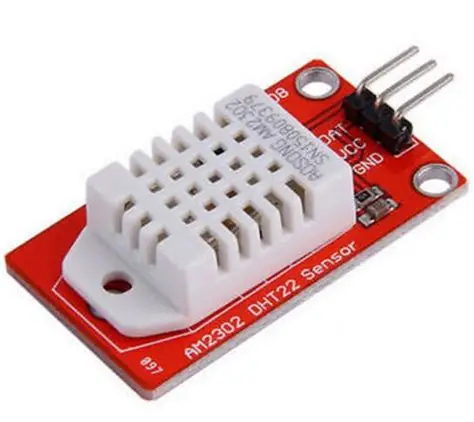

Identificação
| Nome do sensor | DHT22 (AM2302) |
|---|---|
| Categoria | Temperatura e Umidade |
| Tipo de sinal | Digital (protocolo proprietário de 1 fio) |
Conceito
O DHT22, também comercializado como AM2302, é um sensor digital que mede simultaneamente a temperatura e a umidade relativa do ar. Ele reúne, dentro de um único encapsulamento plástico ventilado, um elemento sensor capacitivo de umidade, um termistor NTC e um microcontrolador de 8 bits que realiza toda a conversão e a calibração internamente. Por isso o sensor entrega diretamente um valor já calibrado, dispensando circuitos de condicionamento externos. É a versão mais precisa e de maior faixa de medição da mesma família do popular DHT11.

Princípio de funcionamento
O elemento de umidade é um capacitor cujo dielétrico é um polímero que absorve moléculas de água do ambiente. Quanto mais úmido o ar, maior a constante dielétrica e, consequentemente, maior a capacitância medida. Já a temperatura é obtida por um termistor NTC, cuja resistência elétrica diminui conforme a temperatura aumenta. O microcontrolador interno lê os dois elementos, aplica os coeficientes de calibração gravados de fábrica em sua memória OTP e transmite o resultado como um pacote digital de 40 bits (16 bits de umidade, 16 bits de temperatura e 8 bits de checksum) por meio de um único fio de dados.
Principais especificações técnicas
| Faixa de temperatura | -40 °C a +80 °C |
|---|---|
| Precisão da temperatura | ±0,5 °C |
| Faixa de umidade | 0% a 100% de umidade relativa (UR) |
| Precisão da umidade | ±2% UR (típica); até ±5% nos extremos |
| Resolução | 0,1 °C e 0,1% UR (16 bits) |
| Tensão de alimentação | 3,3 V a 6 V CC |
| Corrente de operação | 1 mA a 1,5 mA (cerca de 50 µA em repouso) |
| Taxa de amostragem | 0,5 Hz (uma leitura a cada 2 segundos) |
| Distância máxima do cabo | Até 20 m com resistor de pull-up adequado |
Tipo de sinal
Digital (protocolo proprietário de 1 fio)
O DHT22 usa um barramento digital de fio único (single-wire), semelhante ao 1-Wire, porém com temporização proprietária. O microcontrolador envia um pulso de início mantendo a linha em nível baixo por ao menos 1 ms; o sensor responde e transmite os 40 bits codificando cada bit pela duração do pulso em nível alto (cerca de 26–28 µs para o bit 0 e 70 µs para o bit 1). A linha de dados precisa de um resistor de pull-up de 4,7 kΩ a 10 kΩ ligado ao VCC. Por não ser um barramento endereçável, cada sensor exige um pino digital exclusivo do microcontrolador.
Aplicações industriais e IoT
- Monitoramento do clima interno de galpões, almoxarifados e salas de servidores;
- Controle de umidade em estufas e na agricultura de precisão;
- Supervisão de câmaras frias e de cadeias de frio na indústria alimentícia;
- Estações meteorológicas conectadas e projetos de cidades inteligentes;
- Monitoramento ambiental de painéis elétricos e quadros de automação;
- Registro de condições de armazenagem de matérias-primas sensíveis à umidade.
Exemplo de utilização em um projeto
Em uma célula robotizada, o DHT22 pode ser instalado dentro do painel elétrico que abriga o controlador do robô. Um ESP32 lê a temperatura e a umidade a cada 30 segundos e publica os valores em um broker MQTT. Se a temperatura ultrapassar 45 °C ou a umidade passar de 70% (risco de condensação nas placas), o sistema aciona um alerta no dashboard de manutenção e liga o exaustor do painel por meio de um relé.
#include <DHT.h>
#define PINO_DHT 4
DHT dht(PINO_DHT, DHT22);
void setup() {
Serial.begin(115200);
dht.begin();
}
void loop() {
float umidade = dht.readHumidity();
float temperatura = dht.readTemperature();
if (isnan(umidade) || isnan(temperatura)) {
Serial.println("Falha na leitura do sensor DHT22");
} else {
Serial.printf("Temperatura: %.1f C | Umidade: %.1f %%\n",
temperatura, umidade);
}
delay(30000); // respeita a taxa maxima de 0,5 Hz
}